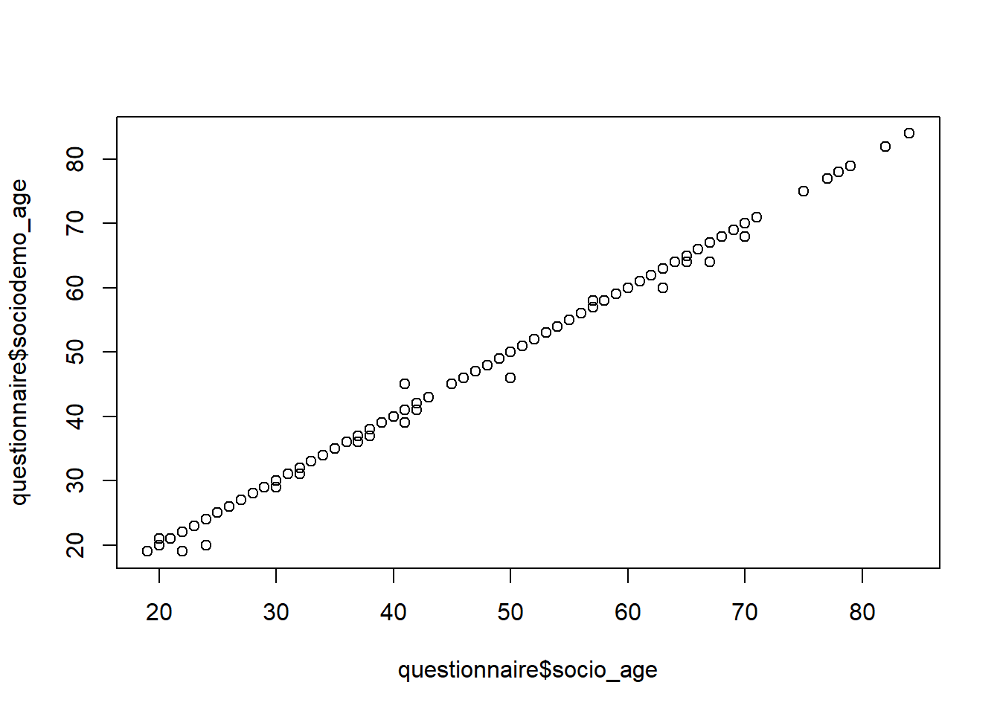
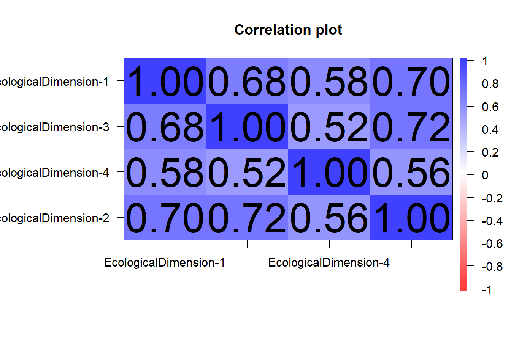
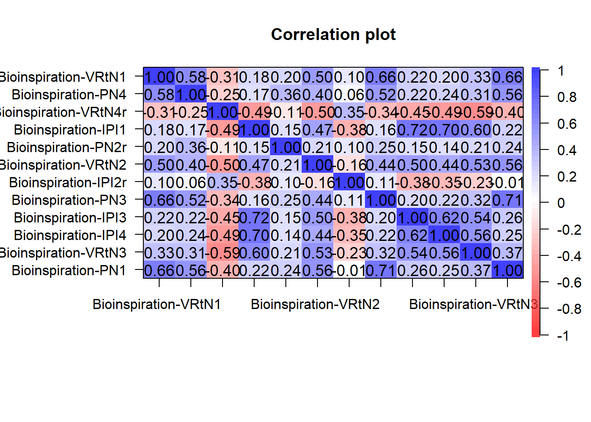
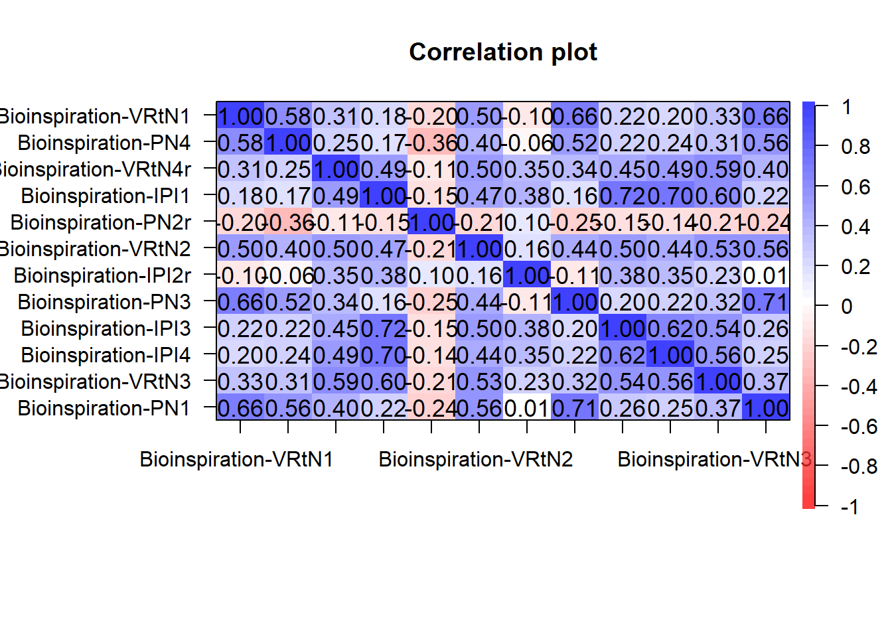
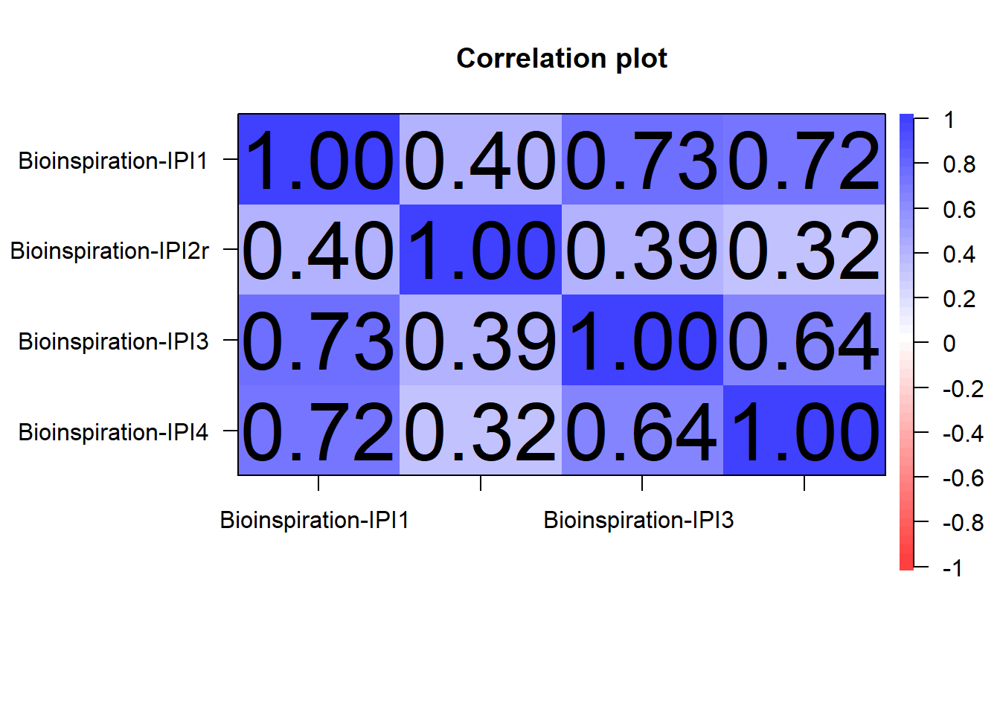
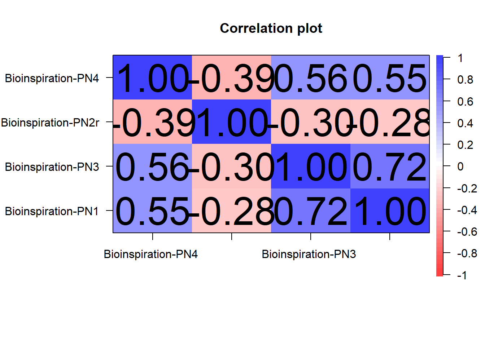
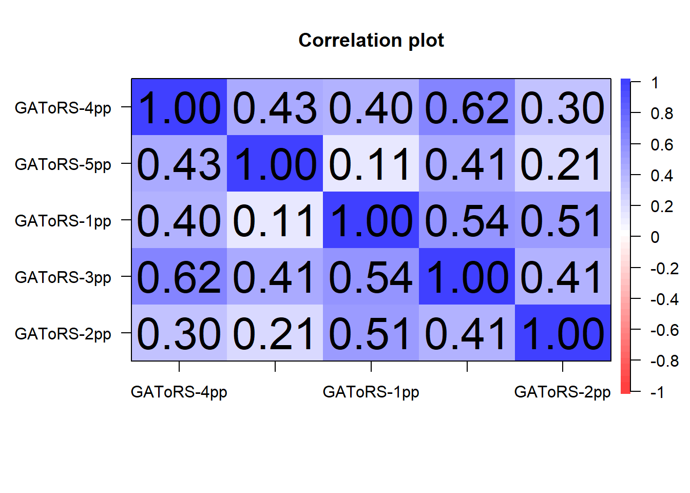
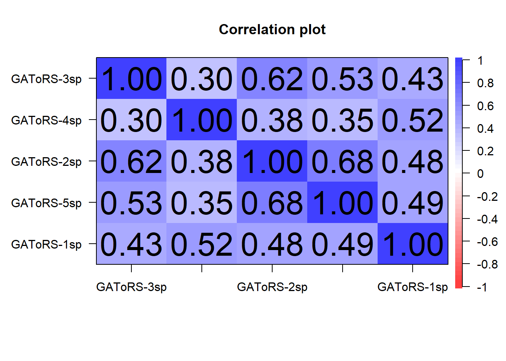
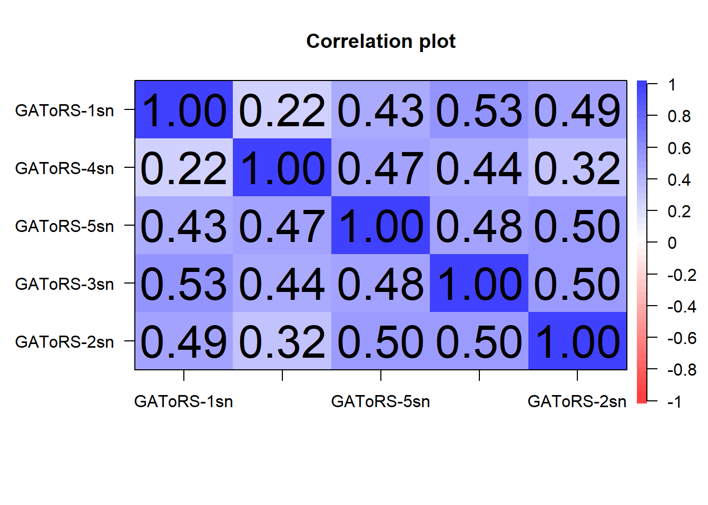

# sets the directory of location of this script as the current directory
# setwd(dirname(rstudioapi::getSourceEditorContext()$path))
### load packages
require(pacman)
p_load('tidyverse', 'jsonlite',
'stargazer', 'DT', 'psych',
'writexl')
### load socio-demographic data
setwd("data demographic")
prolific1 <- read.csv(file = "prolific_demographic_export_6942813a230dac2c3c240557.csv", header = TRUE)
prolific2 <- read.csv(file = "prolific_demographic_export_69428f1e1d002c0222739be4.csv", header = TRUE)
prolific <- rbind(prolific1, prolific2)
rm(prolific1); rm(prolific2)
### load JATOS data
setwd("../data")
suppressMessages(
read_file('jatos_results_data_20251218081001.txt') %>%
# ... split it into lines ...
str_split('\n') %>% first() %>%
# ... filter empty rows ...
discard(function(x)
x == '') %>%
discard(function(x)
x == '\r') %>%
# ... parse JSON into a data.frame
map_dfr(fromJSON, flatten = TRUE)
) -> dat
# Read and parse each JSON line into a list
# json_data <- suppressMessages(
# read_file("jatos_results_data_20250405122610.txt") %>%
# str_split("\n") %>%
# first() %>%
# discard(~ .x == "" || .x == "\r") %>%
# map(~ fromJSON(.x, simplifyVector = FALSE)) # Keep full nested structure
# )
#> add ID counter
dat$ID <- NA
tmp_IDcounter <- 0
for (i in 1:nrow(dat)) {
if (!is.na(dat$sender[i]) &&
dat$sender[i] == "Greetings") {
tmp_IDcounter = tmp_IDcounter + 1
}
dat$ID[i] <- tmp_IDcounter
}
rm(tmp_IDcounter)
### load functions
setwd("../../../functions")
for(i in 1:length(dir())){
# print(dir()[i])
source(dir()[i], encoding = "utf-8")
}
rm(i)
### summary function
data_summary <- function(data, varname, groupnames){
require(plyr)
summary_func <- function(x, col){
c(mean = mean(x[[col]], na.rm=TRUE),
se = sd(x[[col]], na.rm=TRUE) / sqrt(length(x[[col]])))
}
data_sum<-ddply(data, groupnames, .fun=summary_func,
varname)
data_sum <- plyr::rename(data_sum, c("mean" = varname))
return(data_sum)
}Data preperation - Soft Robot Walker Study
1 Notes
2 global variables
Define your global variables (can take some time to run):
3 create raw data files
4 set up questionnaires
### keep only complete data sets
sort(table(dat$ID), decreasing = FALSE)[1:5]
1 68 101 133 149
2 2 2 2 2 sum(table(dat$ID) != max(table(dat$ID)))[1] 83sum(table(dat$ID) == max(table(dat$ID)))[1] 298dat <-
dat[dat$ID %in% names(table(dat$ID))[table(dat$ID) == max(table(dat$ID))], ]
# colnames(dat)
### json (from JATOS) to 2D data.frame
#> scales
tmp_numeric <- str_subset(string = colnames(dat), pattern = "^EcologicalDimension|^Bioinspiration|^evalInf|^GAToRS")
tmp_numeric <- c(tmp_numeric, "dummy_informedconsent", "commCheck", "feedback_conscientiousCompletion", "sociodemo_age")
# add paradata
tmp_notNumeric <- str_subset(string = colnames(dat), pattern = "^meta")
tmp_notNumeric <- str_subset(string = tmp_notNumeric,
pattern = "labjs|location",
negate = TRUE)
tmp_notNumeric <- c(tmp_notNumeric, "PROLIFIC_PID", "framingCondition", "sociodemo_gender", "sociodemo_priorExperience", "sociodemo_residency", "sociodemo_education",
"feedback_critic", "attCheck_text", "sociodemo_universityAffiliation", "sociodemo_universityField",
"reflection_ecological", "reflection_social", "reflection_economic")
### get survey
vec_ques <- c(tmp_notNumeric, tmp_numeric)
questionnaire <- questionnairetype(
dataset = dat,
listvars = vec_ques,
notNumeric = tmp_notNumeric,
verbose = FALSE
)
rm(tmp_notNumeric); rm(tmp_numeric); rm(vec_ques)
dim(questionnaire)[1] 298 77add ordering of scales shown (for neutral condition it is random):
dat_order <- dat[dat$sender %in% c("Sequence Ecological Bioinspiration", "Sequence Bioinspiration Ecological"),]
dat_order <- dat_order[dat_order$ended_on %in% "completion", ]
dat_order$framingCondition <- questionnaire$framingCondition
head(dat_order[, c("framingCondition", "sender")]) framingCondition sender
12 bio-inspired Sequence Ecological Bioinspiration
41 tech-inspired Sequence Ecological Bioinspiration
70 bio-inspired Sequence Ecological Bioinspiration
100 tech-inspired Sequence Bioinspiration Ecological
129 tech-inspired Sequence Bioinspiration Ecological
157 bio-inspired Sequence Ecological Bioinspirationtail(dat_order[, c("framingCondition", "sender")]) framingCondition sender
8982 bio-inspired Sequence Ecological Bioinspiration
9012 bio-inspired Sequence Bioinspiration Ecological
9041 bio-inspired Sequence Bioinspiration Ecological
9070 tech-inspired Sequence Bioinspiration Ecological
9098 tech-inspired Sequence Ecological Bioinspiration
9127 tech-inspired Sequence Ecological Bioinspirationquestionnaire$whichItemsFirst <- ifelse(test = dat_order$sender == "Sequence Ecological Bioinspiration", yes = "sustainable", no = "bioinspired")
table(questionnaire$framingCondition, questionnaire$whichItemsFirst)
bioinspired sustainable
bio-inspired 78 82
tech-inspired 77 614.1 add prolific
### add prolific data
prolific <- prolific[prolific$Participant.id %in% questionnaire$PROLIFIC_PID,]
prolific <- prolific %>%
arrange(sapply(Participant.id, function(y) which(y == questionnaire$PROLIFIC_PID)))
# !!! few participants have participated in both framing conditions?
sum(table(prolific$Participant.id) >= 2)[1] 0# prolific[prolific$Participant.id == "665d5a08c8e61c18498d08c9",]
questionnaire$socio_age <- NA
questionnaire$socio_sex <- NA
questionnaire$socio_ethnicity <- NA
questionnaire$socio_student <- NA
questionnaire$socio_employment <- NA
for(i in 1:nrow(questionnaire)){
tmp_prolific <- prolific[prolific$Participant.id == questionnaire$PROLIFIC_PID[i], ]
if(nrow(tmp_prolific) == 1){
questionnaire$socio_age[i] <- tmp_prolific$Age
questionnaire$socio_sex[i] <- tmp_prolific$Sex
questionnaire$socio_ethnicity[i] <- tmp_prolific$Ethnicity.simplified
questionnaire$socio_student[i] <- tmp_prolific$Student.status
questionnaire$socio_employment[i] <- tmp_prolific$Employment.status
questionnaire$total_min_prolific[i] <- tmp_prolific$Time.taken / 60
} else{
print(unique(tmp_prolific$Participant.id))
}
}
questionnaire$total_min_prolific[questionnaire$total_min_prolific > 1000] <- NA
questionnaire$socio_age <- as.numeric(questionnaire$socio_age)# as always inconsistencies:
table(questionnaire$socio_sex, questionnaire$sociodemo_gender)
female male nonbinary none
Female 153 1 0 1
Male 0 142 1 0plot(questionnaire$socio_age, questionnaire$sociodemo_age)
4.2 set type of variables
questionnaire$ID <- factor(questionnaire$ID)
questionnaire$sociodemo_gender <- factor(questionnaire$sociodemo_gender)
questionnaire$sociodemo_priorExperience <- factor(questionnaire$sociodemo_priorExperience)
questionnaire$sociodemo_residency <- factor(questionnaire$sociodemo_residency)
questionnaire$sociodemo_education <- factor(questionnaire$sociodemo_education)
questionnaire$sociodemo_universityAffiliation <- factor(questionnaire$sociodemo_universityAffiliation)
questionnaire$framingCondition <- factor(questionnaire$framingCondition)
questionnaire$whichItemsFirst <- factor(questionnaire$whichItemsFirst)
questionnaire$socio_employment <- factor(questionnaire$socio_employment)
questionnaire$socio_ethnicity <- factor(questionnaire$socio_ethnicity)
questionnaire$socio_sex <- factor(questionnaire$socio_sex)
questionnaire$socio_sex <- factor(questionnaire$socio_sex)
questionnaire$framingCondition <- as.factor(questionnaire$framingCondition)## non-informative - but Prolific works:
table(questionnaire$sociodemo_residency)
GB
298 4.3 get brainstorming answers
length(str_subset(string = colnames(dat), pattern = "^rating"))[1] 720# 1) rating columns
rating_cols <- str_subset(colnames(dat), "^rating")
# 2) function to safely coerce to numeric
to_num <- function(x) suppressWarnings(as.numeric(as.character(x)))
# 3) build long df
df_brainstorming <- purrr::map_dfr(unique(dat$ID), function(id_val) {
sub <- dat[dat$ID == id_val, , drop = FALSE]
# keep rating columns that are NOT completely NA for this ID
keep_cols <- rating_cols[!vapply(sub[rating_cols], function(v) all(is.na(v)), logical(1))]
if (length(keep_cols) == 0) return(NULL)
sub %>%
select(ID, all_of(keep_cols)) %>%
pivot_longer(
cols = all_of(keep_cols),
names_to = "application",
values_to = "rating"
) %>%
mutate(
rating = to_num(rating),
application = str_remove(application, "^rating-")
) %>%
filter(!is.na(rating)) %>%
select(ID, application, rating)
})
df_brainstorming# A tibble: 741 × 3
ID application rating
<dbl> <chr> <dbl>
1 160 Help people with disabilities reach items in their home 2
2 160 Use to repair machines or items that are high up or dangerous f… 2
3 160 Mount with cameras and explore areas of natural or human disast… 2
4 160 use for wildlife photography 0
5 162 Moving materials 1
6 162 Performing tasks in extreme environments (repairing deepsea pip… 2
7 162 Performing surgery 0
8 162 Managing stock and loading delivery vans 1
9 163 Bringing trays to the elderley 2
10 163 Walking dogs 1
# ℹ 731 more rowstable(df_brainstorming$ID)
160 162 163 164 165 166 168 169 170 171 172 173 174 175 176 177 178 179 180 181
4 4 5 4 4 5 4 6 4 4 4 4 5 4 4 4 4 4 4 5
183 185 186 188 189 191 192 194 195 196 197 198 199 200 201 203 204 205 206 207
4 4 4 4 4 4 4 4 4 4 4 4 4 5 4 4 4 4 4 4
208 209 210 211 212 213 215 216 217 218 221 222 223 224 226 227 229 230 231 232
4 4 4 5 5 4 4 6 5 5 4 4 16 4 4 4 4 4 4 4
233 234 235 236 237 238 240 241 242 243 244 246 247 248 252 255 256 257 258 259
4 4 4 4 4 4 4 4 4 4 4 4 4 4 4 4 4 4 4 4
262 263 264 265 266 267 268 270 272 273 274 275 276 277 278 279 281 282 284 285
4 7 5 4 4 4 5 4 4 4 4 4 8 4 4 10 4 4 4 5
286 287 288 290 292 293 294 295 296 297 299 301 302 303 304 305 306 307 310 311
4 4 4 4 4 4 4 5 5 5 4 4 4 4 4 4 4 4 4 4
312 313 314 315 316 317 318 320 322 323 324 326 327 328 329 330 331 332 333 337
4 5 4 4 7 4 4 4 5 4 4 4 4 5 4 4 4 4 4 4
339 341 342 345 346 347 348 351 352 353 355 357 358 359 360 362 363 365 366 367
4 4 4 4 4 5 4 4 4 4 4 4 4 4 5 4 4 4 4 5
369 370 371 372 374 375 376 377 378 379 380 381
4 4 4 4 4 4 4 4 4 4 4 4 4.4 reverse code items
4.4.1 Perceived Ecological Sustainability Scale (PES)
psych::cor.plot(r = cor(questionnaire[, str_subset(string = colnames(questionnaire), pattern = "^EcologicalDimension")], use = "pairwise.complete.obs"))
4.4.2 Perceived Bio-Inspiration Scale (PBS)
psych::cor.plot(r = cor(questionnaire[, str_subset(string = colnames(questionnaire), pattern = "^Bioinspiration")], use = "pairwise.complete.obs"))
tmp_items <- str_subset(string = colnames(questionnaire), pattern = "^Bioinspiration.*r$")
for(i in tmp_items){
print(i)
print(summary(questionnaire[[i]]))
questionnaire[[i]] <- 8 - questionnaire[[i]]
print(summary(questionnaire[[i]]))
}[1] "Bioinspiration-VRtN4r"
Min. 1st Qu. Median Mean 3rd Qu. Max.
1.00 2.00 3.00 3.03 4.00 7.00
Min. 1st Qu. Median Mean 3rd Qu. Max.
1.00 4.00 5.00 4.97 6.00 7.00
[1] "Bioinspiration-PN2r"
Min. 1st Qu. Median Mean 3rd Qu. Max.
1.00 2.00 3.00 3.44 5.00 7.00
Min. 1st Qu. Median Mean 3rd Qu. Max.
1.00 3.00 5.00 4.56 6.00 7.00
[1] "Bioinspiration-IPI2r"
Min. 1st Qu. Median Mean 3rd Qu. Max.
1.000 1.250 2.000 2.691 3.000 7.000
Min. 1st Qu. Median Mean 3rd Qu. Max.
1.000 5.000 6.000 5.309 6.750 7.000 rm(tmp_items)
psych::cor.plot(r = cor(questionnaire[, str_subset(string = colnames(questionnaire), pattern = "^Bioinspiration")], use = "pairwise.complete.obs"))
# Visual Resemblance to Nature
psych::cor.plot(r = cor(questionnaire[, str_subset(string = colnames(questionnaire), pattern = "^Bioinspiration-VRtN")], use = "pairwise.complete.obs")) # Visual Resemblance to Nature 
# Intentionality & Perceived Inspiration
psych::cor.plot(r = cor(questionnaire[, str_subset(string = colnames(questionnaire), pattern = "^Bioinspiration-IPI")], use = "pairwise.complete.obs"))
# Perceived Naturalness
psych::cor.plot(r = cor(questionnaire[, str_subset(string = colnames(questionnaire), pattern = "^Bioinspiration-PN")], use = "pairwise.complete.obs"))
4.4.3 General Attitudes Towards Robots Scale
4.4.3.1 Personal Level Positive Attitude
psych::cor.plot(r = cor(questionnaire[, str_subset(string = colnames(questionnaire), pattern = "^GAToRS.*pp$")], use = "pairwise.complete.obs"))
4.4.3.2 Personal Level Negative Attitude
psych::cor.plot(r = cor(questionnaire[, str_subset(string = colnames(questionnaire), pattern = "^GAToRS.*pn$")], use = "pairwise.complete.obs"))
4.4.3.3 Personal Level Positive Attitude
psych::cor.plot(r = cor(questionnaire[, str_subset(string = colnames(questionnaire), pattern = "^GAToRS.*sp$")], use = "pairwise.complete.obs"))
4.4.3.4 Personal Level Positive Attitude
psych::cor.plot(r = cor(questionnaire[, str_subset(string = colnames(questionnaire), pattern = "^GAToRS.*sn$")], use = "pairwise.complete.obs"))
4.5 show data
DT::datatable(questionnaire, options = list(pageLength = 5))4.6 save data in different formats
4.6.1 questionnaire
# Set output directory
setwd("outputs")
# Save as Excel (.xlsx)
writexl::write_xlsx(
x = questionnaire,
path = "questionnaire.xlsx" # Save Excel file
)
# Save as RDS (R internal format)
write_rds(
x = questionnaire,
file = "questionnaire.rds" # Save R object for later use
)
# Save as CSV
write_csv(
questionnaire,
file = "questionnaire.csv" # Save as CSV (comma-separated)
)4.6.2 open questions
# Set output directory
setwd("outputs")
tmp <- str_subset(string = colnames(questionnaire), pattern = "^reflection")
tmp <- c("ID", "PROLIFIC_PID", "whichItemsFirst", tmp, "feedback_critic")
# Save as Excel (.xlsx)
writexl::write_xlsx(
x = questionnaire[, tmp],
path = "questionnaire_openQuestions.xlsx" # Save Excel file
)
# Save as Excel (.xlsx)
writexl::write_xlsx(
x = df_brainstorming,
path = "df_brainstorming.xlsx" # Save Excel file
)